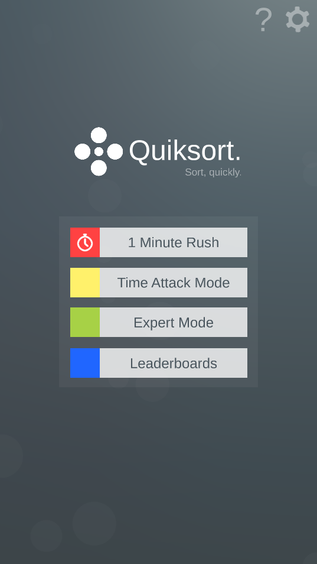
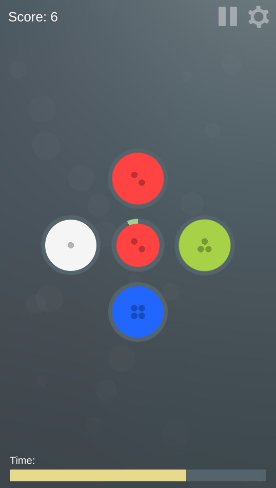

Home >
Projects > Quiksort
Quiksort
What is it?
A hyper-casual mobile app developed in Unity.
The premise of Quiksort is simple. Sort, quickly. A sort object will appear in the middle, you have
to tap the correct sort category.
You have only one objective - How far can you go?
Game Modes
The game has 3 game modes
-
1 Minute Rush
- You have 1 minute to sort as many as you can.
- Correct sorts increase your score.
- Incorrect sorts decrease your score.
- The amount of time you have to sort each object is fixed at 3 seconds.
-
Time Attack
- You start gently with 10 seconds on the clock.
- Correct sorts increase your time.
- Incorrect sorts decrease your time.
- The amount of time you have to sort each object is decreased over time.
-
Expert Mode
- You start with only 2 sort colours.
- As you gain score you "level up" and the amount of sort categories increases.
- The sort categories go all the way upto 8 categories.
- You have only 3 lives, 3 mistakes and you're done!
Screenshots

